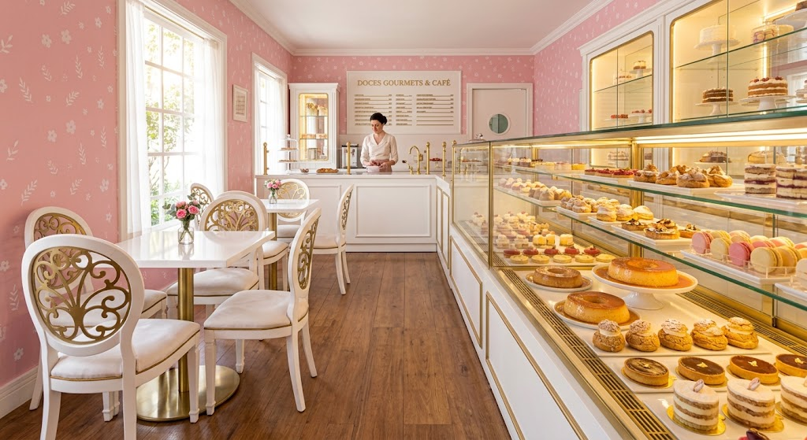

Sobre a Doce Encanto

Como começou?
A Doce Encanto começou como um pequeno projeto de confeitaria feito em casa, com o objetivo de transformar receitas tradicionais em momentos especiais. O que começou como uma paixão por preparar doces para familiares e amigos foi crescendo aos poucos, até se tornar uma confeitaria dedicada a criar sobremesas artesanais para diferentes ocasiões.
O que fazemos?
Com o passar do tempo, a confeitaria passou a oferecer diferentes tipos de bolos, doces e sobremesas, sempre valorizando ingredientes de qualidade e preparo artesanal. Entre nossas opções estão bolos, brownies, macarons, pudins e outras delícias preparadas com cuidado para proporcionar uma experiência saborosa e especial aos nossos clientes.
Nossa missão
Nossa missão é proporcionar experiências doces e especiais aos nossos clientes, criando produtos preparados com carinho para acompanhar os momentos mais importantes de suas vidas. Buscamos oferecer qualidade, sabor e dedicação em cada receita, tornando aniversários, comemorações e até mesmo os pequenos momentos do dia a dia ainda mais doces.